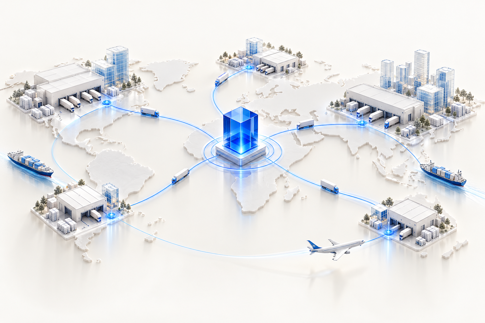
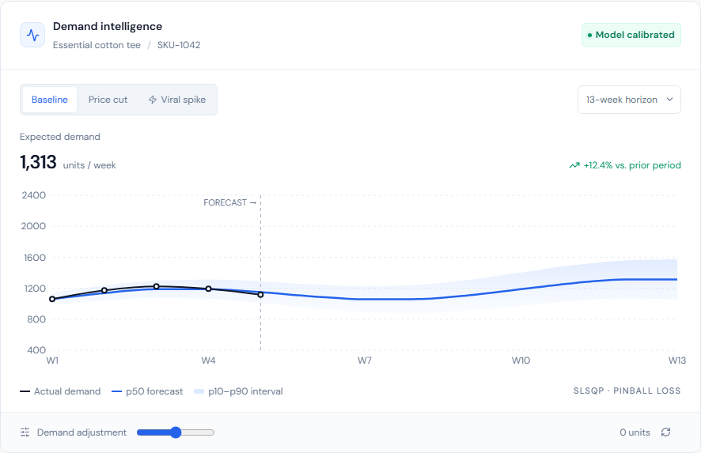

Zero-shot Chronos meets the signals that move your market.

Reorder with a 95% service-level target.
Less carrying inventory. More capital in motion.
Protect availability without overstocking.
Illustrative financial model. Actual savings and payback depend on your business, implementation, and subscription.
Tenant boundaries enforced at the kernel.
Immutable audit records. Electronic sign-offs.